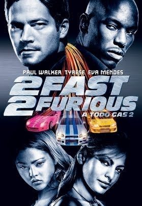
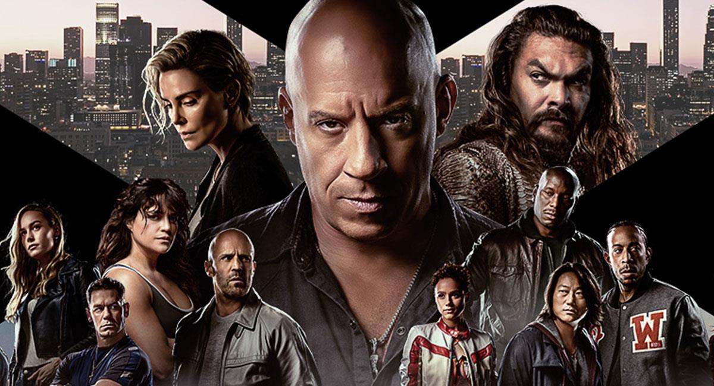
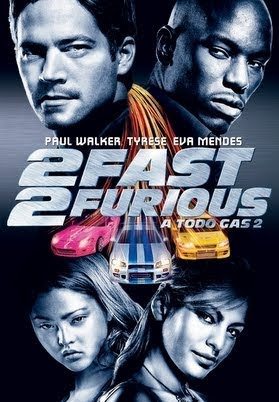
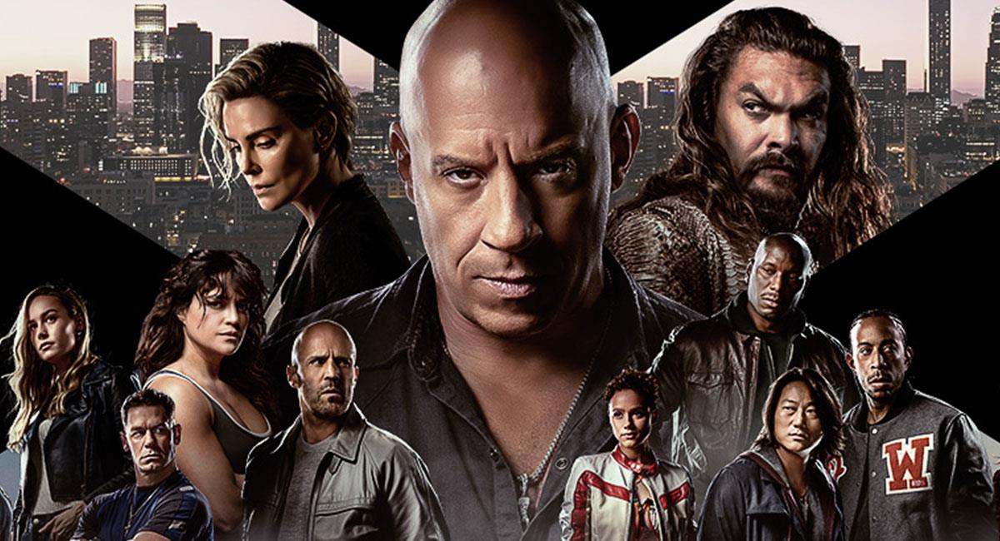

| Pelicula | RAPIDOS Y FURIOSOS |
|---|---|
| Director | Vin Diesel Louis Leterrier James Wan Philip Atwell John Singleton David Leitch F. Gary Gray Rob Cohen Justin Lin |
| Descripción |
Es una franquicia de medios estadounidense centrada en una serie de películas de acción que se ocupan en gran medida de
automóviles. La saga también incluye cortometrajes, una serie de televisión, espectáculos en vivo, videojuegos y atracciones de parques temáticos |
| Cronología |
Rápido y Furioso" (2001) Rápidos y Furiosos 2" (2003) Rápido y Furioso 10 (2023) |
| Imagen |
 



|